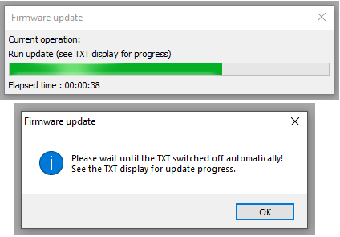

במסך קבלת הפנים הראשון הקליקו על כפתור ה "Next" כדי להמשיך.
שלב 3
במסך הבא המכיל את הסכם השימוש יש לאשר את תנאי השימוש לפני הקלקה על כפתור ה "Install" כדי להמשיך.
תהליך ההתקנה יחל אוטומטית, יש להמתין עד לסיומו.
כעת יפתח חלון הטרמינל של התוכנה שיתחיל לנגן את סרטון קבלת הפנים.
במקביל ייפתח ברקע חלון התקנת מנהל ההתקנים שאחראי לזהות ולעבוד מול הרובוט עם חיבורו למחשב.
שלב 4
יש לאשר את התקנת מנהל ההתקנים ברקע ולהקליק על כפתור ה Install. ייתכן שמספר בקשות אישור יופיעו במהלך ההתקנה - יש לאשר את כולן.
שלב 5
במסך הסיום יש להקליק על כפתור ה Finish לסיום תהליך ההתקנה. (ייתכן שהחלון מוסתר מאחורי חלון הטרמינל)
חיבור ראשוני של הבקר למחשב
כל בקר חדש מהערכה שאינו מעודכן לגרסה האחרונה (4.2.4) צריך לעבור שדרוג חד-פעמי על ידי חיבור ראשוני לסביבת העבודה שהתקנו במחשב.
ראשית יש לחבר את הבקר לחשמל - בחיבור לבטריה יש להשתמש בבטריה טעונה במלואה בלבד - ולהדליק אותו בלחיצה ארוכה על כפתור ההדלקה העגול בבקר.
יש לחבר את הבקר למחשב בכבל USB, ולהמתין בסבלנות ששלב הזיהוי הראשוני על ידי המחשב יסתיים בהצלחה.
נפתח את סביבת העבודה שהותקנה במחשב: יש לפתוח את מסך התחל באמצעות הקלקה על כפתור ההתחל במקלדת או במסך , לגשת לרשימת התכניות All Programs, ולבחור בתיקיית RoboPro את קיצור הדרך להפעלת התכנית.
במסך התכנית יש להתחבר אל הרובוט. ראשית נקליק על סמליל החיבור COM/USB. נקליק OK בשני המסכים שיקפצו. לבסוף נקליק על סמליל בדיקת ההתחברות (Test) לשם פתיחת טרמינל בדיקת החיבור אם התוכנה תזהה שמדובר בבקר עם גרסה קודמת היא תבקש אישור לשדרג אותו - נלחץ OK במסך שיפתח נמתין בסבלנות לסיום תהליך העדכון שבסופו ייכבה הבקר *כעת ניתן להדליק מחדש את הבקר בלחיצה ארוכה על כפתור ההדלקה העגול שימו לב: בהתחברות לבקר שכבר משודרג לגרסתו האחרונה ייפתח מסך החיבור הרגיל המאפשר לצפות בזמן אמת ולעבוד מול כל כניסות ויציאות הבקר סיימתם את תהליך עדכון הבקר החד-פעמי, כעת ניתן לסגור את חלון סביבת העבודה.
חזרו למסך הוראות ההתקנה של FTScratchTXT להמשך שלבי העבודה לתכנות בסביבת Scratch
למתכנתי RoboPro מומלץ להיעזר בקובץ העזר המלא לתוכנה שהותקן כברירת מחדל ל- C:\Program Files (x86)\ROBOPro\RoboProEN.chm(בסביבת 32 ביט הוא יותקן ל- C:\Program Files\ROBOPro\RoboProEN.chm)
צרו קשר
נשמח לשמוע מכם בכל נושא, שמרו על קשר!
שלחו לנו דוא"ל, פנו אלינו בדף הפייסבוק והתעדכנו בסרטוני ההדרכה שאנו מפרסמים בערוץ היוטיוב שלנו


 , לגשת לרשימת התכניות All Programs, ולבחור בתיקיית RoboPro את קיצור הדרך להפעלת התכנית.
, לגשת לרשימת התכניות All Programs, ולבחור בתיקיית RoboPro את קיצור הדרך להפעלת התכנית.


 סיימתם את תהליך עדכון הבקר החד-פעמי, כעת ניתן לסגור את חלון סביבת העבודה.
סיימתם את תהליך עדכון הבקר החד-פעמי, כעת ניתן לסגור את חלון סביבת העבודה.